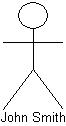
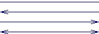
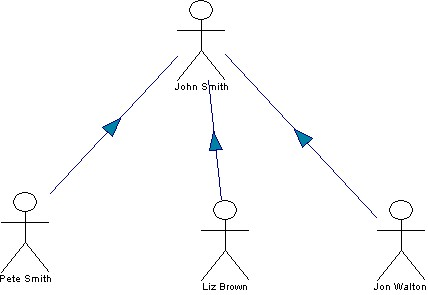

|
|
Team Management Diagram
This type of diagram allows a hierarchy of personnel within an
organization to be shown. Each staff member within the hierarchy can be
allocated a name; job-title; email address and home page URL. This
simple diagram is an effective tool for organizing staff within projects
or simply showing the structure of personnel and their contact details.
To view the main multi-CASE help page click
here
|
|
|
|

Team Member
Definition: A team member represents an employee/member of an
organization.
Representation: A standard team member is represented by a stick man
icon with the name of the employee it represents displayed underneath. A team
member may also be represented as an image. e.g. A standard team member (John
Smith) and an image team member (Mark Dixon).


Creation: To create a team member right click the diagram editor or
the diagram title in the project tree and select "Add Team Member (As Image)"
from the menu. Now left click the diagram where you want the team member to be
positioned. If an image team member is being added you will be prompted to
select the image file. You will now be prompted to add the name, job title,
e-mail address and a home page URL if one is available.
Rules: Team members should be given a name.
Operations: Move Forward/Back, Bring to Front, Send to Back, Delete,
Add Subordinate Member, Add Subordinate Member As Image, Add Link, E-Mail
Member, Go To Home Page, View As Symbol, Convert To Image, Change Text Color,
Edit Member Annotation/Details.
Link
Definition: A link is used to model a relationship between two
team members. The nature of the relationship is not
defined by the tool, so its purpose is dependent on the context of use. e.g. It
may show that a team member must deliver certain documents to another team
member. An optional label can be specified that may annotate the purpose of the
link.
Representation: Links are represented by a solid line between two team
members. These can be simple lines, single arrows pointing either way or double
headed arrows. To change the appearance of a link right click the link and
select one of the four "Show As ..." options.

Creation: Links are created by right clicking on the team member you
wish to be the source of the link and selecting "Add Link" from the menu. You
must then left click the team member you wish to be the destination of the link.
The link will now be created and drawn between the two team members.
Rules: Links must be used to link two team members.
Operations: Move Forwards/Backwards, Bring to Front, Send to Back,
Delete, Add/Remove Link Point, Edit Link Type, Change Link Color, Edit Link
Annotation/Name.
Subordinate Team Member
Definition: A team member that is added in
a position under an existing team member is said to be a subordinate team
member. This type of relationship is designed to show hierarchical type
management structures.
Representation: Subordinate team members are represented by a standard
team member symbol or by an image. On creation they are linked to the superior
team member via a link decorated by a directional arrow. i.e.
Creation: To create a subordinate team member right click on an
existing team member and select either "Add Subordinate Member" or "Add
Subordinate Member Image" from the menu. Then add the subordinate member as you
would a non-subordinate member. The link between the two will be added
automatically.
Rules: A team member can only be a subordinate to one other team
member.
Operations: Move Forward/Back, Bring to Front, Send to Back, Delete,
Add Subordinate Member, Add Subordinate Member As Image, Add Link, E-Mail
Member, Go To Home Page, Convert To Image/View As Symbol, Change Text Color,
Edit Member Annotation/Details.
Example
Below is an example of a Team Management Diagram:
